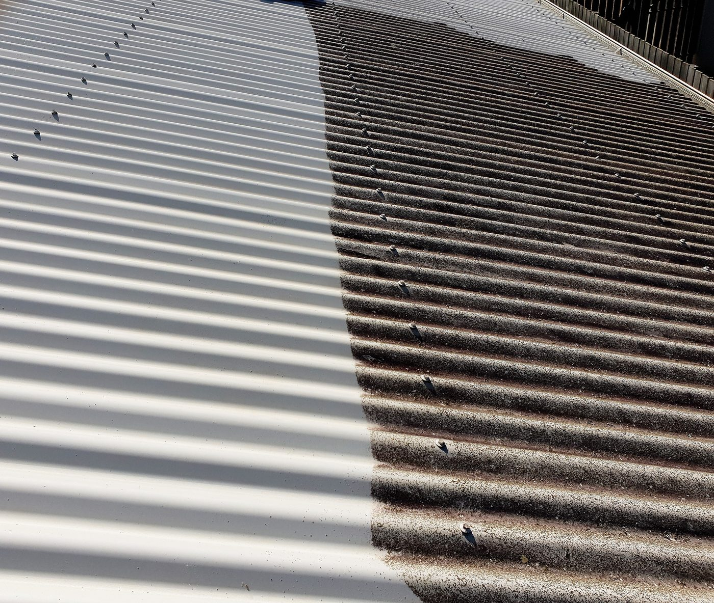
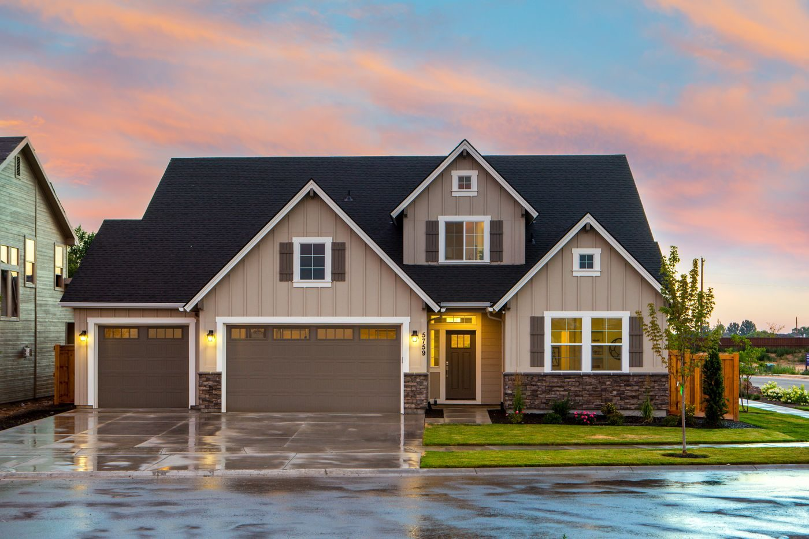
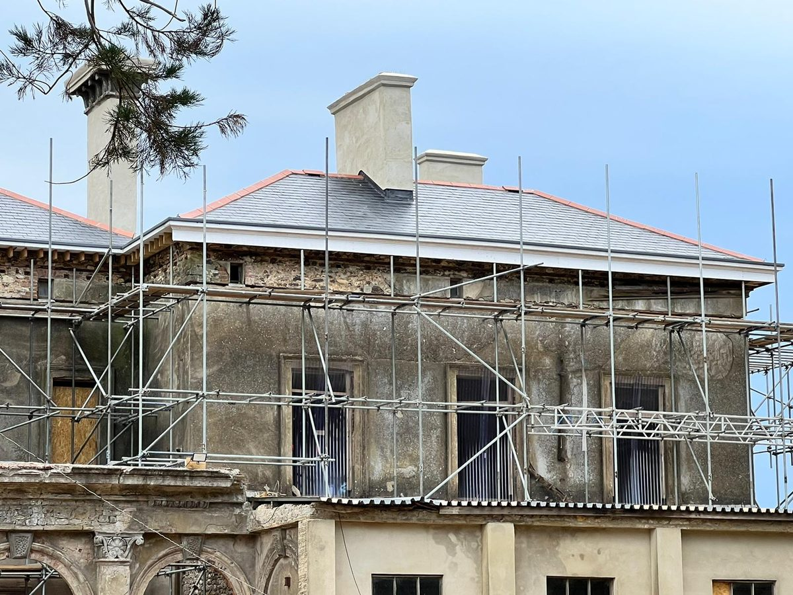
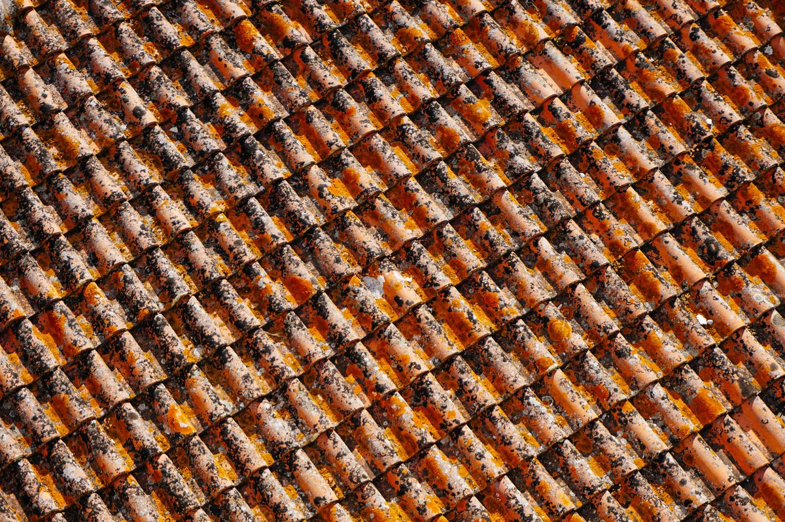
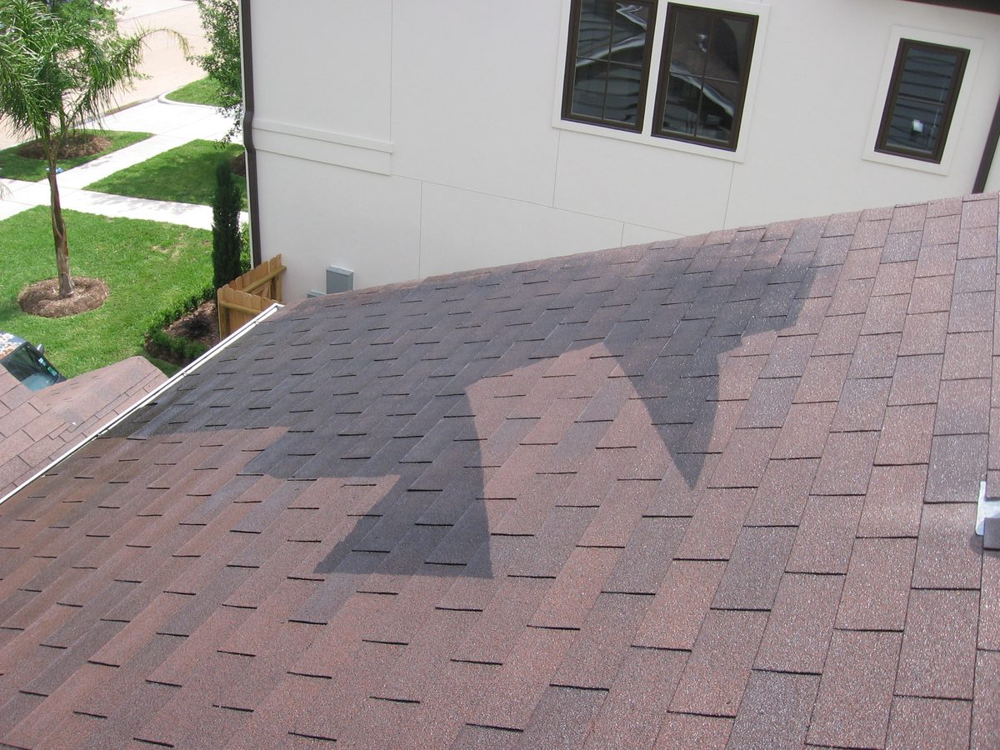

Roof cleaning
Moss, lichen, mould and built-up dirt on tile or metal roofs. Soft-wash approaches where high pressure would damage the surface.
Tile and metal roof cleaning, restoration and recoating around Blacktown, Mt Druitt, Rooty Hill, Seven Hills and nearby western Sydney suburbs.
Request a quote below and a local roof installer covering your suburb will get in touch. No obligation.

Residential roof cleaning and restoration across Blacktown and Mt Druitt.

Moss, lichen, mould and built-up dirt on tile or metal roofs. Soft-wash approaches where high pressure would damage the surface.

Repairs, rebedding and pointing where needed, then cleaning and a protective finish so the roof looks tidy and sheds water properly.

Colour restoration and sealers for concrete or terracotta tiles after a proper clean. Useful when fading and porous tiles are holding moisture.

Cleaning, rust treatment and recoating for Colorbond-style and older metal roofs. Flag rust or leaks on the form so the installer can advise.
Blacktown, Mt Druitt, Rooty Hill, Doonside, Seven Hills, Plumpton, Bidwill, Emerton, Minchinbury, Quakers Hill, Kings Langley and nearby western Sydney suburbs.
Western Sydney roofs cop heat, summer storms and leaf litter from established trees. A proper restore usually means checking tiles or sheets, clearing gutters where related, treating organic growth, and a finish that suits your roof type — not a quick blast that cracks tiles.
A local roof installer for your suburb. We take the enquiry and put you in touch — they quote and carry out the job if you go ahead.
Depends on roof size, pitch, access, tile vs metal, and whether recoating or repairs are needed. Send an enquiry with your suburb and a few details for a local quote — we don’t publish fixed prices here.
Yes — Mt Druitt, Rooty Hill, Doonside, Seven Hills and nearby western Sydney as well as Blacktown. The installer confirms coverage for your address.
It can, especially on older concrete tiles. Many jobs use a softer wash and treatment instead. Mention your roof type on the form so the installer can recommend a suitable method.
We only use your details to respond to your enquiry. If you tick consent, those details may be shared with a local installer for quoting. See the privacy note in the footer.
Blacktown, Mt Druitt & western Sydney. Takes about a minute — a local installer will follow up.